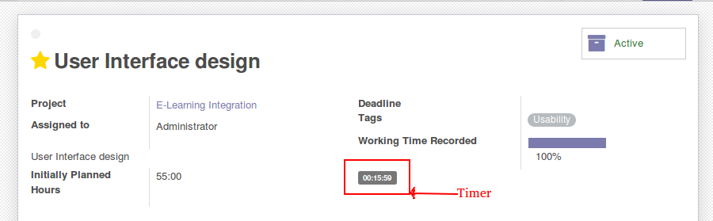

Timer widget shows number of hours,minutes and seconds since work or event have been started.
For Example Music Concert event started on the 12 o'clock and the event is going on. Timer widget will show hours,minutes and seconds completed since starting of that event. Once event will be completed end date time will be given and timer will be stopped for forever.
Timer widget can be used in Project
Like when developer start work on task they will enter start time and till they complete work it will show timer. You can use this widget in any of your custom or existing module.

To use this module some technical knowledge is required. This module is used as dependent module in many other modules. so be careful if purchasing only this module.